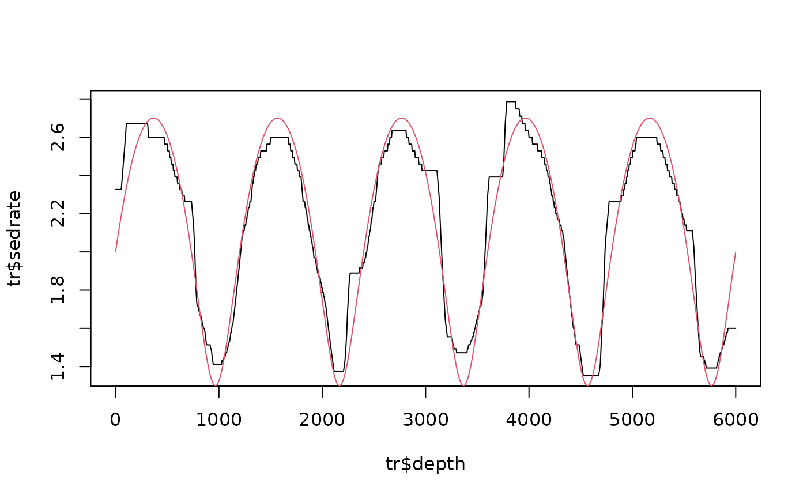

Chirp-matched wavelet scalogram with the astronomical template over rate and rate gradient
Source:R/analyse_chirp_wavelet.R, R/zzz_aliases_american.R
analyse_chirp_wavelet.RdThe wavelet counterpart of analyse_chirp_eha. At every scale the record is transformed with a
family of chirped Morlet wavelets whose frequency sweep corresponds to a relative gradient of the sedimentation
rate g = d ln(rate) / d depth (a cycle of fixed duration has d ln(period) / d depth = g, i.e. the chirp of the
matched wavelet at scale s is c = -g s omega_0). The astronomical template is then scored, for every position, rate
and gradient, on the scalogram of the wavelets matched to that gradient: the score is the weighted mean log ratio
of the power at the depth periods of the cycles to the local continuum (running median along the period axis).
track_chirp_hmm tracks the rate and the gradient jointly through this score. With steer, the
scalogram of the gradient of a track is returned (every cell with the wavelet matched to the local gradient), as
power and, with squeeze = TRUE, synchrosqueezed with the matched wavelets' instantaneous period.
Usage
analyse_chirp_wavelet(
data,
lowerPeriod,
upperPeriod,
dj = 1/50,
omega_nr = 10,
chirp = seq(-0.05, 0.05, by = 0.005),
astro_periods,
sedrate,
step = NULL,
smooth_depth = NULL,
local_octaves = 0.75,
chirp_max = 1.5,
steer = NULL,
squeeze = FALSE,
continuum = c("lowess", "median"),
verbose = FALSE
)
analyze_chirp_wavelet(
data,
lowerPeriod,
upperPeriod,
dj = 1/50,
omega_nr = 10,
chirp = seq(-0.05, 0.05, by = 0.005),
astro_periods,
sedrate,
step = NULL,
smooth_depth = NULL,
local_octaves = 0.75,
chirp_max = 1.5,
steer = NULL,
squeeze = FALSE,
continuum = c("lowess", "median"),
verbose = FALSE
)Arguments
- data
Input record in the depth domain: a matrix or data frame with depth in column 1 and the proxy value in column 2 (further columns are ignored). Incomplete rows are removed, the rows are sorted, the record is interpolated to the median depth spacing and standardised. Required, no default.
- lowerPeriod, upperPeriod
Shortest and longest period of the scalogram, in depth units (numeric, 0 <
lowerPeriod<upperPeriod;lowerPeriodat least twice the sampling interval). Required, no default.- dj
Spacing of the period axis and of the rate grid in octaves (numeric, > 0).
Default=1/50.- omega_nr
Number of cycles omega_0 of the (chirped) Morlet wavelets (numeric, > 0). Long wavelets (large values) gain most from the de-chirping.
Default=10.- chirp
Relative rate gradients g = d ln(rate) / d depth that are tried, per depth unit (numeric vector; 0 is always added).
Default=seq(-0.05, 0.05, by = 0.005).- astro_periods
Astronomical periods of the template in kyr: a numeric vector (equal weights) or a data frame with columns
periodandweight. Required, no default.- sedrate
Range of sedimentation rates searched, in depth units per kyr (numeric vector
c(lower, upper), lower < upper); the rate grid is spaced bydjin log2. Required, no default.- step
Spacing in depth units of the positions at which the template is scored (numeric, > 0);
NULLuses 5 times the sampling interval.Default=NULL.- smooth_depth
Length in depth units of the moving average applied to the power along the record before the template is scored (numeric, >= 0);
NULLuses 2 x the shortest astronomical period x the geometric mean ofsedrate.Default=NULL.- local_octaves
Half width in octaves of the running median that defines the local continuum (numeric, > 0).
Default=0.75.- chirp_max
Largest dimensionless chirp of a wavelet,
|g| x scale x omega_0(numeric, > 0): a wavelet that would have to sweep by more than this within its own length is not matched (the plain wavelet is used), because the linear-chirp model does not hold over a wavelet longer than the scale of the rate changes (the 405-kyr wavelet spans a whole 1.2-Myr oscillation in CIP Case 3).Default=1.5.- steer
Optional sedimentation-rate track: a
wr_track(track_chirp_hmm,track_astro_hmm) or atrack_astro_autoresult, withdepthandsedrate. The scalogram of the wavelets matched to its (smoothed) gradient is then returned inPower;NULLreturns the plain (g = 0) Morlet scalogram.Default=NULL.- squeeze
Also synchrosqueeze the steered scalogram with the instantaneous period of the matched wavelets (logical, TRUE or FALSE), returned as
Power_sst; only used whensteeris given.Default=FALSE.- continuum
Continuum estimate of the spectrum at a position (character),
"lowess"or"median", seeanalyse_chirp_eha.Default="lowess"(the first element ofc("lowess", "median")).- verbose
Print the progress every 50 scales (logical, TRUE or FALSE).
Default=FALSE.
Value
A list of class analyze.wavelet with Power (the steered scalogram if steer is given,
otherwise the g = 0 Morlet scalogram), Power_sst (if squeezed), Period, axis.1,
axis.2, and for track_chirp_hmm: template_score_all (rates x gradients x positions),
sedrate_grid, chirp_grid, positions, dt (the position step).
Details
Compared with analyse_chirplet_sst, which picks the chirp of the strongest coefficient cell by cell
(and therefore follows noise in a noisy record), the chirp here is a property of the sedimentation rate shared by
all cycles at a position, so it is decided by all cycles together and by the continuity of the track.
Examples
# \donttest{
set.seed(1)
t <- seq(0, 3000, by = 1)
x_t <- sin(2 * pi * t / 23.7) + 0.6 * sin(2 * pi * t / 19) + 0.8 * sin(2 * pi * t / 41)
sr <- 2 + 0.7 * sin(2 * pi * t / 600)
zt <- c(0, cumsum(sr[-1] * diff(t)))
z <- seq(0, max(zt), by = 1)
x <- approx(zt, x_t, z)$y + rnorm(length(z), sd = 1.5)
cw <- analyse_chirp_wavelet(data.frame(z, x), lowerPeriod = 10, upperPeriod = 300,
chirp = seq(-0.004, 0.004,
by = 0.0005), astro_periods = c(41, 23.7, 19), sedrate = c(0.8, 5))
tr <- track_chirp_hmm(cw)
plot(tr$depth, tr$sedrate, type = "l")
lines(z, approx(zt, sr, z)$y, col = 2)

# }